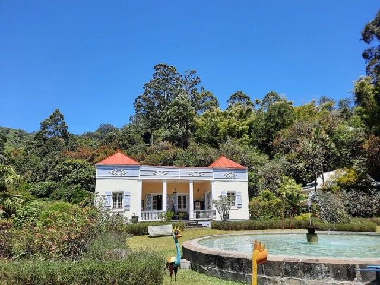
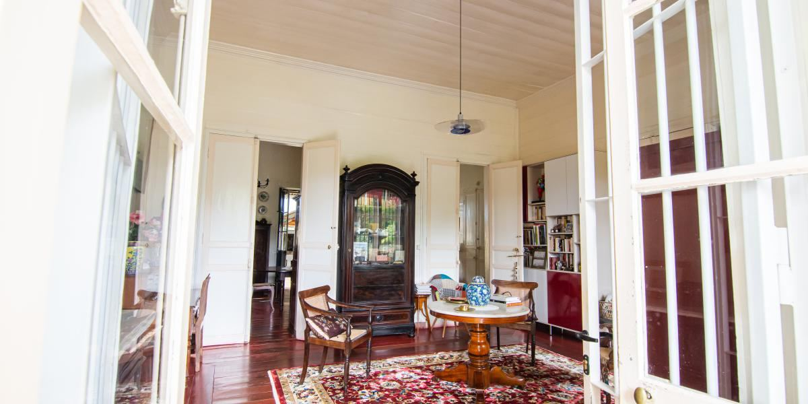
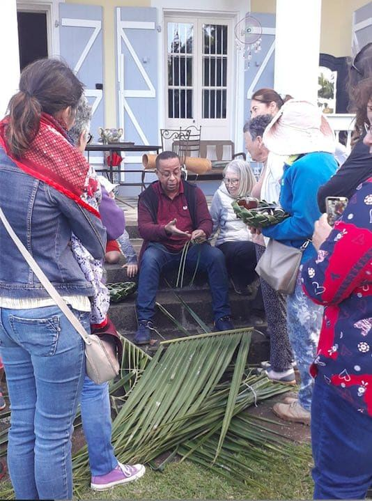
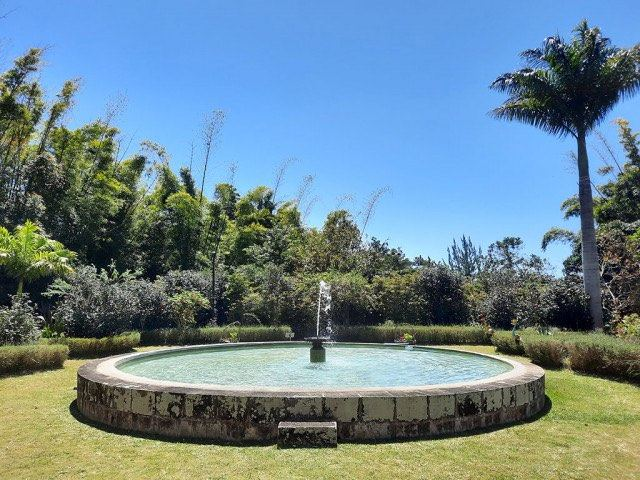
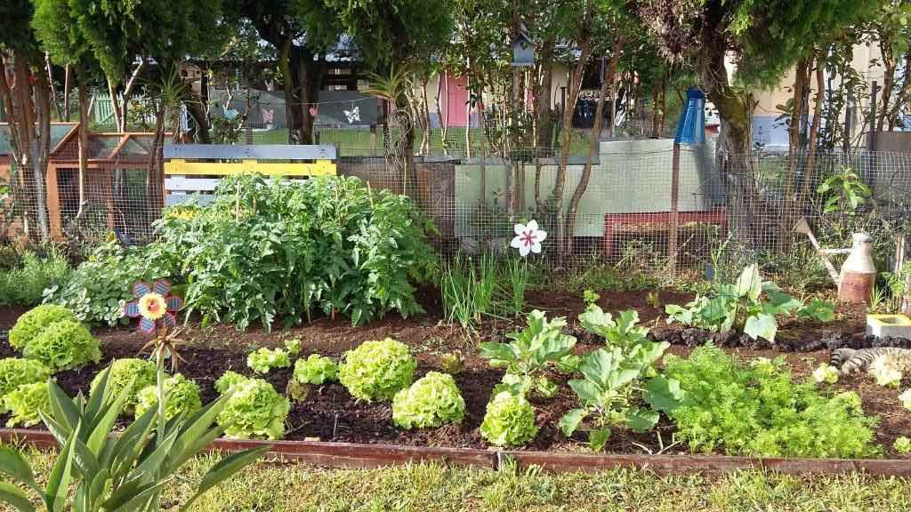
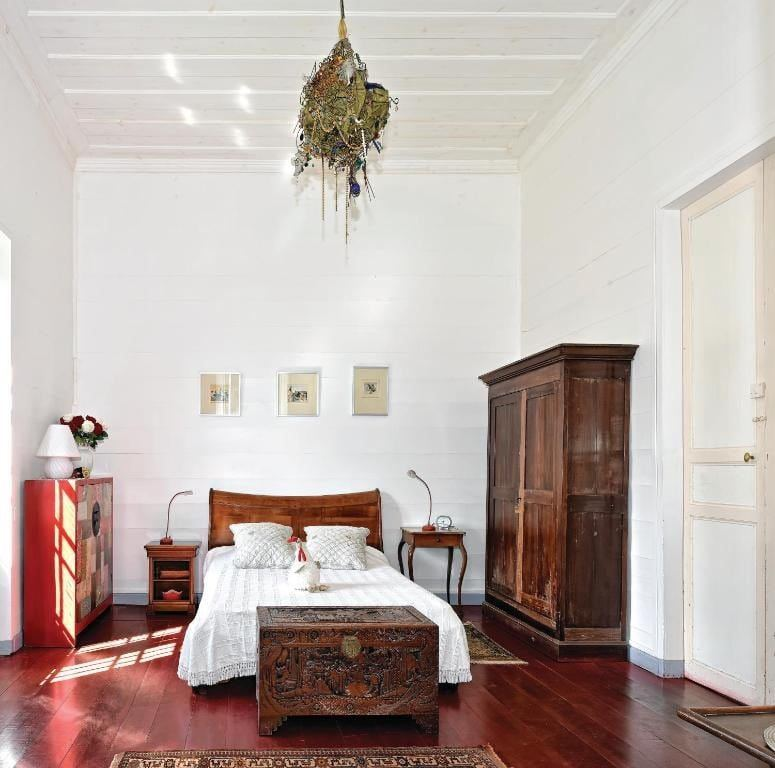

Saint-François · Hauts de Saint-Denis
Poussez le portail du Domaine de Beaubassin : rosiers de Bourbon, grand bassin circulaire et visite guidée par la propriétaire elle-même.

Inscrit aux Monuments historiques en 2018La maison
Nichée dans les hauts de Saint-Denis, à Saint-François, la demeure de style néoclassique date des années 1860. Son nom vient du grand bassin circulaire qui occupe le centre du jardin.
Salon et salle à manger meublés, cuisine séparée comme le voulait la tradition, vitrines de souvenirs de famille : chaque pièce a son histoire.

Repères
La propriété, connue comme le Jardin du Mont Saint-François, sert de jardin d’acclimatation au botaniste Nicolas Bréon.
Alfred Mazérieux fait construire la maison ; son fils Alfred, ancien maire de Saint-Denis, s’y installe ensuite avec son épouse Euphrasie.
Maurice Ozoux, cousin d’Euphrasie, rachète le domaine : il appartient aujourd’hui à la famille Ozoux, depuis quatre générations.
Monique et Cyril Ozoux s’installent dans la maison et ouvrent les portes aux visiteurs.

Venir vivre le domaine
La visite guidée est menée par la propriétaire : demeure, jardin créole, anecdotes de famille, puis une pause sur la varangue autour du bassin, citronnade maison à la clé.
Le domaine propose aussi des ateliers de tressage de coco et une chambre d’hôtes pour deux personnes.
Visites guidéesAteliers de tressageChambre d’hôtesDans le jardin



Rendez-vous récent
Les 19 et 20 septembre 2026, le domaine a accueilli « Retour à Beaubassin », une exposition collective d’installations, vidéos et objets glissés dans la maison et le jardin, pour regarder le lieu comme un endroit habité.
71 chemin Alfred Mazérieux
Saint-François
97400 Saint-Denis
Parking privé
Par téléphone : 06 92 04 50 17
Ou par message sur la page Facebook.
Sur le boulevard Sud, dans le sens Saint-Denis / Saint-André, prendre la sortie Providence / Saint-François.